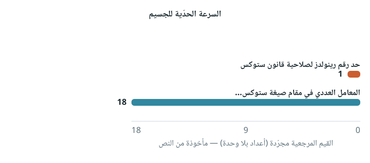

ترسيب ستوكس: كم تستغرق حبة رمل لتهبط القاع؟
حرّك قطر الحبة وفرق الكثافة ولزوجة السائل، وتابع سرعة الترسيب ورقم رينولدز وزمن نزول 10 سم؛ سترى السرعة تقفز مع مربع القطر وينكسر النموذج عند Re ≥ 0.1. محاكاة تعليمية لا قياس فيزيائي حقيقي.
محاكاة تعليمية لا قياس فيزيائي حقيقي: الأرقام تُحسب من النموذج لحظيًا، ولا تُقاس بمخبار في المختبر.
افتراضات النموذج والمصدر
v_t = Δρ · g · d² / (18 · μ)
حبة كروية صلبة تهبط في وسط ساكن لا نهائي بلا جدران ولا جسيمات مجاورة.
اللزوجة والكثافة ثابتتان أثناء الهبوط، ولا تؤخذ قوة قصورية في الحسبان (جريان زحفي).
السرعة المطبوعة هي السرعة الحدّية، ويُفترض بلوغها لحظيًا لإهمال مرحلة التسارع.
Motion of an Object in a Viscous Fluid — College Physics, §12.6 — OpenStax
عندما تُترك حبة رمل في سائل ساكن تهبط أولًا متسارعةً ثم تبلغ سرعة حدّية ثابتة حين تتوازن قوة الجاذبية الصافية (الوزن مطروحًا منه قوة الطفو) مع قوة السحب اللزوجة التي يبذلها السائل. يصف قانون ستوكس هذه السرعة الحدّية بأنها تتناسب مع مربع قطر الحبة وفرق الكثافة بينها وبين السائل، وعكسيًا مع لزوجة السائل.
في هذه التجربة تتحكم في قطر الحبة وفرق الكثافة ولزوجة السائل، فيحسب الموديول السرعة الحدّية ورقم رينولدز للجسيم والزمن اللازم للهبوط عشر سنتيمترات. تُقارن النتيجة بحدّ رينولدز 0.1: فإذا بقي الرقم تحته اعتُبر نموذج ستوكس صالحًا، وإذا تجاوزه انهار الافتراض الخلفي للنموذج.
الرسالة المحورية أن مضاعفة القطر تضاعف سرعة الترسيب أربع مرات لا مرتين؛ وتلك العلاقة التربيعية تفسّر لماذا تغوص الحصاة الكبيرة فورًا بينما تبقى ذرّة الطمي معلقة ساعات في الماء.
كيف تعمل الظاهرة؟
تبدأ الحبة بهبوط متسارع تحت الوزن الصافي بعد طرح قوة الطفو (أرخميدس). وكلما زادت سرعتها ازدادت قوة السحب اللزوجة التي تتناسب طرديًا مع السرعة ومع قطر الحبة ومع لزوجة السائل. تتعادل القوتان عند سرعة حدّية يثبت عندها الهبوط، فيبقى الجسم هابطًا بسرعة منتظمة حتى القاع. هذه السرعة هي ما يعطيها قانون ستوكس من موازنة مباشرة بين الوزن الصافي وقوة السحب.
العلاقة بالأرقام
المعادلة: v_t = Δρ · g · d² / (18 · μ). عند قطر الحبة 0.05 mm، فرق الكثافة (حبة − سائل) 1,000 kg/m³، لزوجة السائل 1.0 mPa·s، يعطي الحساب: سرعة الترسيب الحدّية = 1.363 mm/s؛ رقم رينولدز للجسيم = 0.068 بلا وحدة؛ زمن نزول 10 سم = 73.39 s؛ صلاحية نموذج ستوكس (1 صالح · 0 خارج الحد) = 1 . حالة «حبة رمل خشنة (1 مم) في الماء» (قطر الحبة 1.00 mm، فرق الكثافة (حبة − سائل) 1,000 kg/m³، لزوجة السائل 1.0 mPa·s): سرعة الترسيب الحدّية = 545.000 mm/s؛ رقم رينولدز للجسيم = 545.000 بلا وحدة؛ زمن نزول 10 سم = 0.18 s؛ صلاحية نموذج ستوكس (1 صالح · 0 خارج الحد) = 0 . حالة «حبة ناعمة (0.05 مم) في الجلسرين» (قطر الحبة 0.05 mm، فرق الكثافة (حبة − سائل) 1,000 kg/m³، لزوجة السائل 90.0 mPa·s): سرعة الترسيب الحدّية = 0.015 mm/s؛ رقم رينولدز للجسيم = 8.41e-6 بلا وحدة؛ زمن نزول 10 سم = 6,605.50 s؛ صلاحية نموذج ستوكس (1 صالح · 0 خارج الحد) = 1 . هذه أمثلة مولدة من دالة الحساب نفسها؛ وليست قياسات فعلية أو مواصفات لجهاز تجاري.
مفاهيم متقاربة
يختلف ترسيب ستوكس عن السقوط الحر في الفراغ: ففي الفراغ تتسارع كل الأجسام بالتعجيل نفسه، أما في السائل اللزج فتبلغ كل حبة سرعة حدّية مستقلة حسب حجمها وكثافتها. ويختلف عن جريان الأنبوب حيث تصف اللزوجة فقدان الضغط على طول مجرى، فهنا اللزوجة هي التي تحدّ سرعة الهبوط عبر قوة السحب. كما أنه ليس قياسًا لسرعة جسيم بعينه، بل تقدير نموذجي لسرعة حدّية.
حدود التطبيق
يصحّ قانون ستوكس فقط عندما يكون الجريان حول الحبة زحفيًا، أي حين يبقى رقم رينولدز للجسيم أصغر من 0.1. عند تجاوز الحد تنفصل الدوامات خلف الحبة وتتولى قوة سحب قصورية أكبر، فيبطؤ الهبوط الفعلي عن تقدير ستوكس. كما يفترض النموذج حبة كروية صلبة ووسطًا لا نهائيًا بلا جدران وبلا جسيمات متجاورة، ولا يصف التشكّلات غير الكروية ولا الحركة المضطربة. ويُحسب رقم رينولدز هنا بكثافة الماء (1000 كجم/م³) وليس بفرق الكثافة، لأن الشرط معيار جريان السائل حول الحبة.

| الكمية | القيمة | المصدر |
|---|---|---|
| سرعة الترسيب الحدّية — الحالة الافتراضية | 1.363 mm/s | [1] |
| رقم رينولدز للجسيم — الحالة الافتراضية | 0.068 بلا وحدة | [1] |
| زمن نزول 10 سم — الحالة الافتراضية | 73.39 s | [1] |
| صلاحية نموذج ستوكس (1 صالح · 0 خارج الحد) — الحالة الافتراضية | 1 بلا وحدة | [1] |
المصادر
- 1 Motion of an Object in a Viscous Fluid — College Physics, §12.6 — OpenStax. openstax.org/books/college-physics/pages/12-6-motion-of-an-object-in-a-viscous-fluid · اطُّلع عليه 2026-11-28
- 2 Stokes' law — Wikipedia. en.wikipedia.org/wiki/Stokes%27_law · اطُّلع عليه 2026-11-28
راجعه: مراجعة آلية (هيرمز) · 2026-11-28 · آخر تحديث 2026-11-28
رجوع إلى المعمل